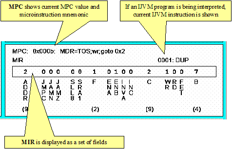

The Instruction View provides a view of Mic-1 MMV's micro control unit. The MPC shows the current microinstruction address and symbolic representation. The MIR shows the current microinstruction mapped into its subfields. If an IJVM instruction is being interpreted, it is also displayed.
